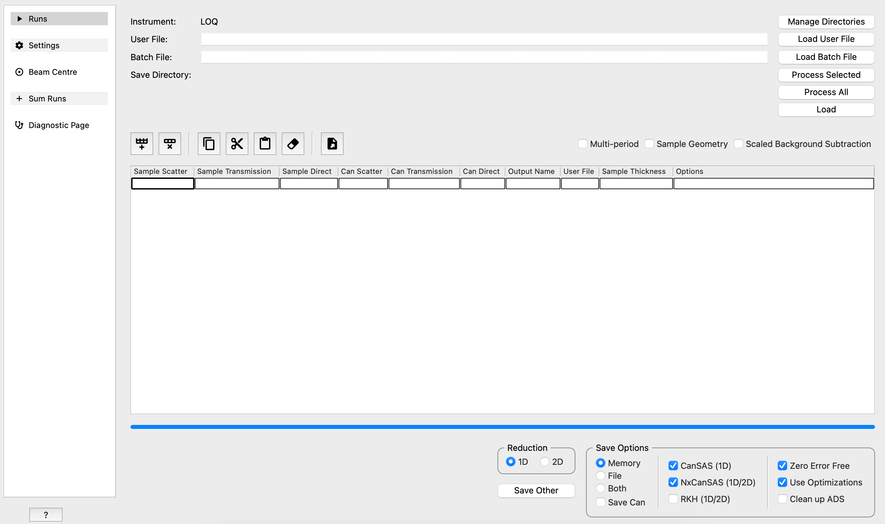

SANS Changes#
ISIS SANS Interface#
Added manual saving functionality to the new GUI.
This release sees the “new” ISIS SANS interface becoming the primary interface, and the deprecation of the old interface. Active development will only be carried out on the new interface and only major bugs will be fixed in the deprecated interface. This change does not affect the functionality of either of the interfaces.
To signify this change, the “ISIS SANS” interface has been renamed “Old ISIS SANS (Deprecated)” and the “ISIS SANS v2 experimental” interface has been renamed “ISIS SANS”. The old interface will be removed in a later release.

New#
Added an Export Table button which exports table as a csv. This can be re-loaded as a batch file.
Added a Process selected button which only processes selected rows.
Added a Process all button which processes all rows regardless of row selection.
Added a Load button to load selected workspaces without processing.
Added Save Can option to output unsubtracted can and sample workspaces.
Added a Select Save Directory button in the Sum Runs tab. This is separate from default save directory and only determines where summed runs are saved.
Improvements#
Updated workspace naming scheme for new backend.
Added shortcut keys to copy/paste/cut rows of data.
Added shortcut keys to delete or add rows.
Added tabbing support to table.
Added error notifications on a row by row basis.
Updated file adding to prefix the instrument name.
Updated file finding to be able to find added runs without instrument name prefix.
Updated interface code so calculated merge scale and shift are shown after reduction.
Removed instrument selection box. Instrument is now determined by user file.
The interface automatically remembers last loaded user file.
If loading of user file fails, user file field will remain empty to make it clear it has not be loaded successfully.
Added display of current save directory to the main run tab.
Workspaces are centred upon loading.
Added transmission sample and can data to XML and H5 files when provided.
Added transmission sample/can to unsubtracted sample/can XML and H5 files when Save Can option selected.
Can set PhiMin, PhiMax, and UseMirror mask options from the options column in the table.
Sample shape can be autocompleted in the table.
File path to batch file will be added to your directories automatically upon loading.
All limit strings in the user file (L/ ) are now space-separable to allow for uniform structure in the user file. For backwards compatibility, any string which was comma separable remains comma separable as well.
QXY can accept simple logarithmic bins. E.g. L/QXY 0.05 1.0 0.05 /LOG in the user file.
The interface will remember which output mode (Memory, File, Both) you last used and set that as your default when on the SANS interface.
The interface will remember if save can was checked the last time the interface was used and set this by default.
Default adding mode is set to Event for all instruments except for LOQ, which defaults to Custom.
Removed the show transmission check box. Transmission workspaces are always added to output files regardless of output mode, and are always added to ADS if “memory” or “both” output mode is selected.
Bug fixes#
Fixed an issue where the run tab was difficult to select.
Changed the geometry names from CylinderAxisUP, Cuboid, and CylinderAxisAlong to Cylinder, FlatPlate, and Disc.
The interface now correctly resets to default values when a new user file is loaded.
The interface no longer hangs whilst searching the archive for files.
Updated the options and units displayed in wavelength and momentum range combo boxes.
Fixed a bug which crashed the beam centre finder if a phi mask was set.
Removed option to process in non-compatibility mode to avoid calculation issues.
Interface can correctly read user files with variable step sizes using /LOG and /LIN suffixes.
Fixed occasional crash when entering data into table.
Fixed error message when trying to load or process table with empty rows.
Removed option to process in non-compatibility mode to avoid calculation issues.
Default name for added runs has correct number of digits.
RKH files no longer append to existing files, but overwrite instead.
Reductions with event slices can save output files. However, transmission workspaces are not included in these files.
ORNL SANS#
Improvements#
ORNL HFIR SANS instruments have new geometries. The monitors now have a shape associated to them. Detector will move to the right position based on log values.
Algorithms#
New#
SANSILLReduction performs SANS data reduction for ILL instruments D11, D22, D33.
SANSILLIntegration performs integration of corrected SANS data to produce I(Q), I(Phi,Q) or I(Qx,Qy).
Removed#
Obsolete SetupILLD33Reduction algorithm was removed.